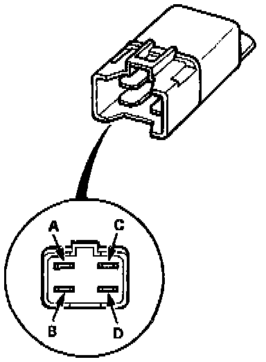

Operation CHARM
: Car repair manuals for everyone.
Home
>>
Acura
>>
1994
>>
Legend Sedan V6-3206cc 3.2L SOHC FI
>>
Repair and Diagnosis
>>
Relays and Modules
>>
Relays and Modules - HVAC
>>
Blower Motor Relay
>>
Testing and Inspection
Blower Motor Relay: Testing and Inspection

There should be continuity between the A and B terminals when power and ground are connected to the C and D terminals.
There should be no continuity when power is disconnected.